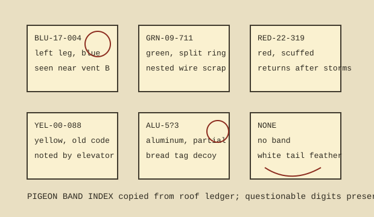

| Band | Notes | Last reliable sighting |
|---|---|---|
| BLU-17-004 | Blue left-leg band. Gray bird, black wing bars, usually on vent B. Scratches tar beside the same screw head. | Apr 18, 09:40 |
| GRN-09-711 | Green split ring. Carries wire, dental floss, and once a coil of copper braid from antenna rail. | May 02, 16:10 |
| RED-22-319 | Scuffed red band. Returns after storms, drinks from drain 3 before joining flock. | May 07, 07:25 |
| ALU-5?3 | Partial aluminum number. Question mark is not doubt; it is hidden by deformation. | Mar 29, 12:05 |
| NONE | White tail feather, no band, highly confident regular. Entered because unbanded birds also keep schedules. | May 05, 18:30 |
False positive: a yellow bread closure was carried for three days and logged as YEL-00-088 before falling beside the hatch.